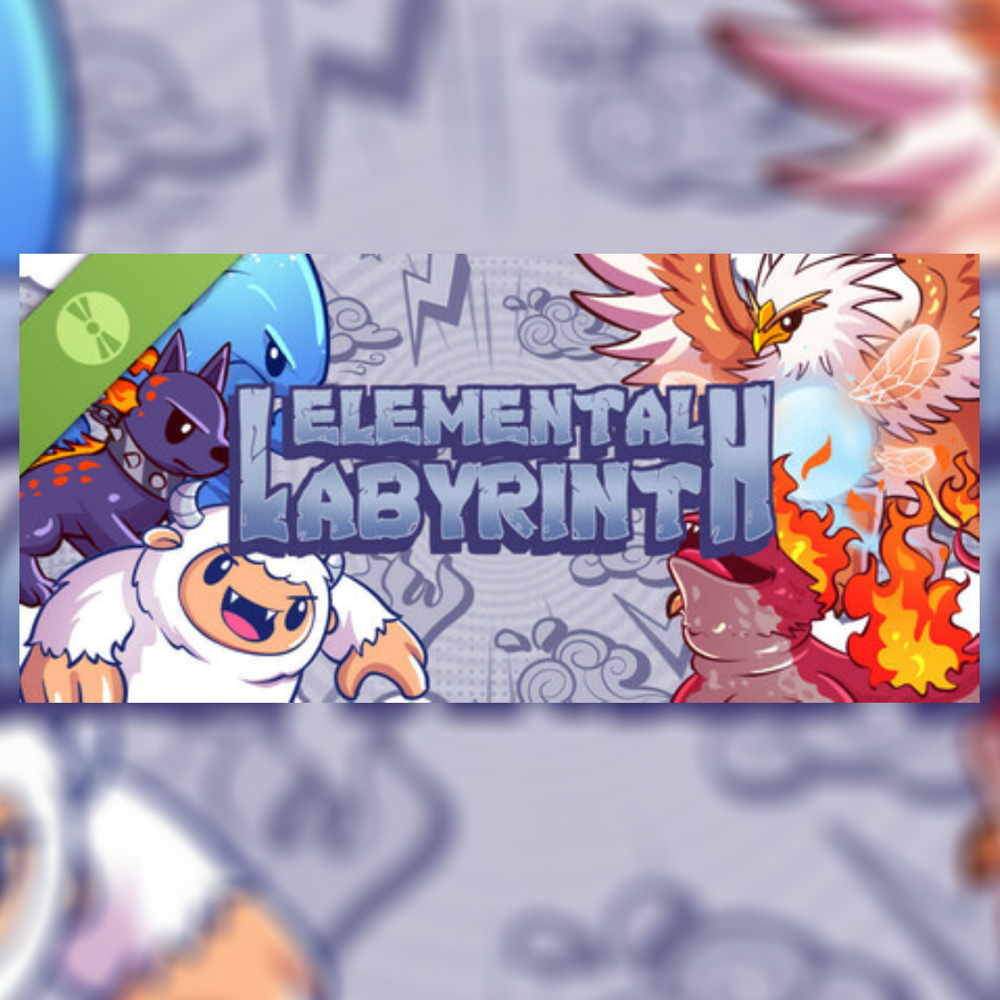
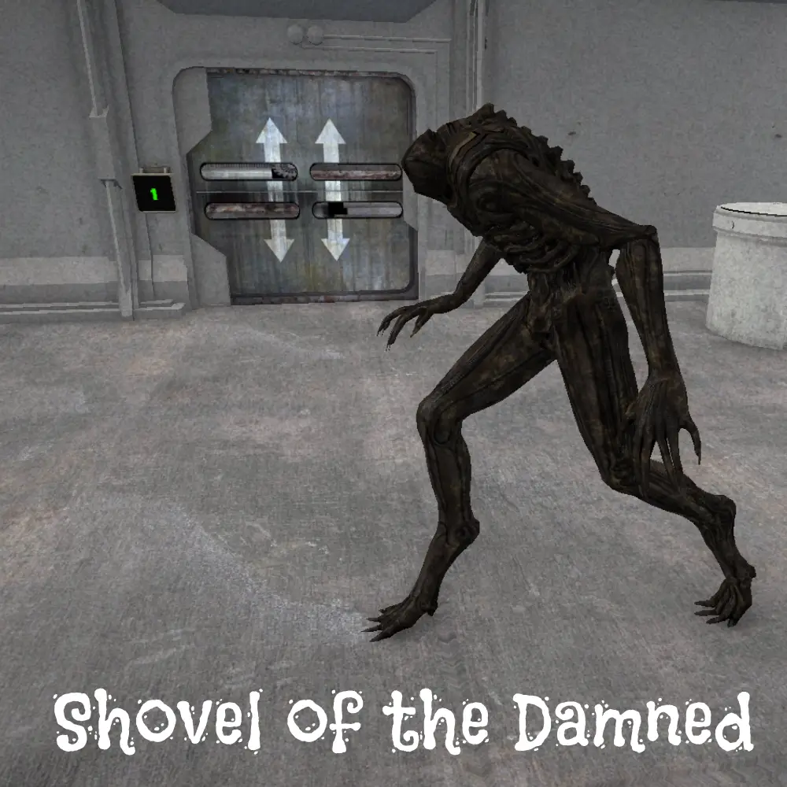

Tworzymy dźwięk, który pasuje do Twojej wizji.
Produkcja muzyczna • Mix & Mastering • Sound Design • Audio do gier
„Nie musisz wiedzieć dokładnie, czego potrzebujesz. Wystarczy, że wiesz, jaki efekt chcesz osiągnąć.”
Czego potrzebujesz?
Niezależnie od tego, czy piszesz pierwszy wokalny kawałek, potrzebujesz miksu do wydania na Spotify, czy budujesz pełną oprawę dźwiękową gry lub filmu — prowadzimy projekt od A do Z.
PRODUKCJA MUZYCZNA
Od surowego pomysłu i melodii nucącej w głowie, przez pełną aranżację i podkład pod wokal, aż po profesjonalny mix i mastering gotowy na serwisy streamingowe.
- Produkcja całych utworów od podstaw (Ambient, Electronic, Folk, Hip-Hop, Pop, Cinematic)
- Produkcja autorskich podkładów dla wokalistów i songwriterów
- Aranżacja, sound design syntezatorów i budowanie instrumentału
- Mix wielośladowy oraz mastering do standardów streamingowych
- Dopasowanie pod styl, referencje i zamierzony klimat
AUDIO / SOUND DESIGN
Projektowanie autorskich efektów dźwiękowych, kinowych pejzaży dźwiękowych, montaż i czyszczenie mowy oraz pełne udźwiękowienie gier i filmów.
- Efekty dźwiękowe (SFX) do gier, UI, czarów, broni, otoczenia
- Kompleksowe udźwiękowienie zwiastunów, animacji i filmów
- Montaż i czyszczenie dialogów, narracji, podcastów i słuchowisk
- Adaptacyjne audio i integracja silników gier (Unity, FMOD)
- Paczki SFX na zamówienie z pełną licencją komercyjną
Masz tylko pomysł na utwór?
Nucisz melodię na dyktafon w telefonie? Masz napisany tekst w notatniku? A może masz tylko ogólny klimat w głowie i kilka linków do piosenek, które Ci się podobają?
Nie potrzebujesz wiedzy technicznej, nut ani profesjonalnego studia, żeby zacząć. Pomagamy przełożyć Twój zamysł na pełnoprawny, profesjonalny utwór: od harmonii i brzmienia, przez aranżację, aż po zgranie i mastering.
Wybierz zakres realizacji
Od pojedynczego elementu po kompletną produkcję — zakres i cena zależą od projektu. W cenie każdej usługi: 3 poprawki oraz pełne przeniesienie praw.
01. Utwory
Ambient / eksperymentalne
PodstawaProstsze formy ambientowe, eksperymentalne i atmosferyczne tworzone od podstaw pod tło, gry, medytację lub instalacje.
- Kompozycja autorska
- Produkcja i synteza
- Sound design tła
- Mix & mastering
- 3 tury poprawek w cenie
Pełna produkcja utworu
Kompleksowa produkcja utworu — od pierwszego pomysłu lub ścieżki wokalnej do gotowego materiału emisyjnego.
- Kompozycja i aranżacja
- Autorski instrumental
- Sound design i unikalne barwy
- Pełna produkcja pod wokal
- Mix & mastering emisyjny
- Paczka stemsów (indywidualne ścieżki)
- 3 tury poprawek w cenie
* Cena zależy od złożoności projektu i zakresu realizacji. Zawiera 3 tury poprawek i prawa majątkowe.
02. Montaż audio & Mix / Master
Mix
ŚcieżkiProfesjonalne przygotowanie, edycja i miks dostarczonych ścieżek wielośladowych.
- Edycja i czyszczenie
- Obróbka wokali
- Balans & przestrzeń
- Processing kreatywny
Mastering
FinalFinalne przygotowanie materiału do publikacji i dystrybucji na Spotify, Apple Music i YT.
- Mastering pasmowy
- Optymalizacja LUFS
- Współczesna dynamika
- WAV 24-bit + MP3
Montaż audio
PodcastMontaż podcastów, narracji, lektora i słuchowisk bez dodatkowego sound designu.
- Montaż dialogów i mowy
- Czyszczenie oddechów i szumów
- Wyrównanie poziomów
- Wklejenie podkładu klienta
Montaż + SFX
Montaż materiału wraz z projektowaniem pełnej i immersyjnej warstwy dźwiękowej.
- Montaż i czyszczenie głosu
- Projektowanie dedykowanych SFX
- Ambience i efekty tła
- Miks całościowy
* Stawka za godzinę dotyczy jednej godziny gotowego materiału audio.
03. SFX / Sound Design
Zestaw 10 SFX
Paczka10 autorskich efektów dźwiękowych przygotowanych ściśle pod specyfikację Twojego projektu.
- Sound design (synteza / foley)
- Edycja i processing
- Eksport gotowych plików (WAV 48/96kHz)
- Pełna licencja komercyjna
Paczki sampli
Sklep paczek sampli, bibliotek dźwiękowych i instrumentów wirtualnych — wkrótce.
Kolekcja profesjonalnych bibliotek dźwiękowych w przygotowaniu i katalogowaniu.
Pełne udźwiękowienie
Full AudioKompleksowe udźwiękowienie filmu, gry, animacji, zwiastuna lub słuchowiska od A do Z.
- Sound design wszystkich obiektów
- Efekty dźwiękowe & Foley
- Wielowarstwowy ambience
- Miks całościowy (i opcjonalny FMOD)
- Opieka do wdrożenia / premiery
* Zakres i cena ustalane indywidualnie na podstawie briefu.
Nie wiesz, czego potrzebujesz?
Opisz swój projekt, a bezpłatnie przygotujemy zakres realizacji i indywidualną wycenę.
Wybrane realizacje 4NOX WAV
Posłuchaj, jak brzmi nasza praca: od piosenek i coverów wokalnych, przez udźwiękowienie gier indie, po atmosferyczne słuchowiska.

Diya — Witaj Pokarmie
Autorska aranżacja i słowiański folk klimatyczny. Stworzenie wielowarstwowego instrumentarium, nagranie i miks partii wokalnych oraz mastering.

NOX — DAGAZ
Klimatyczny utwór inspirowany słowiańskim folkiem i klimatem wiedźmińskim, łączący surowe instrumenty akustyczne z hybrydową syntezą.
Wiskers & Magic
Uroczy, baśniowy soundtrack do gry stworzonej przez zespół 8bitJelly. Melodia prowadząca, ciepłe instrumentarium i dynamiczne przejścia.

Elemental Labyrinth
Dynamiczna ścieżka do przygodowej gry fantasy. Muzyka reagująca na stan rozgrywki oraz stan zdrowia gracza w middleware FMOD.

Shovel of the Damned
Projekt dla ekipy VOXTEN. Immersyjne, mroczne audio do gry survival horror: niepokojący sound design, foley podziemi i budowanie napięcia ciszą.

Wiedźmin — Więź Przypadków
Profesjonalna realizacja fanowskiego słuchowiska w uniwersum Wiedźmina. Czyszczenie głosu lektorów, odgłosy walki mieczem, magia i karczemne tło.
Chcesz, aby Twój projekt brzmiał na tym samym poziomie?
Opowiedz nam o swojej wizji. Przygotujemy propozycję brzmieniową i konkretny plan działania.
Jak wygląda współpraca?
Prosty, transparentny proces bez żargonu i bez nieporozumień. Wiesz dokładnie, co się dzieje na każdym etapie.
OPISUJESZ POMYSŁ
Piszesz do nas przez formularz lub maila. Może to być nagranie z dyktafonu, tekst, referencja z YouTube lub wstępna koncepcja gry.
USTALAMY ZAKRES I CENĘ
Dobieramy odpowiedni wariant realizacji, ustalamy stały budżet, termin oraz liczbę poprawek (standardowo 3 tury w cenie). Zero niespodzianek.
TWORZYMY I WERYFIKUJEMY
Przystępujemy do produkcji. Przesyłamy Ci wersje robocze (wip), słuchasz i zgłaszasz swoje uwagi. Wprowadzamy poprawki, aż brzmi idealnie.
ODBIERASZ GOTOWY MATERIAŁ
Po akceptacji otrzymujesz bezstratne pliki WAV (oraz MP3 i stemsy jeśli dotyczy), umowę o przeniesienie autorskich praw majątkowych i fakturę KSeF.
Poznaj ludzi stojących za 4NOX WAV
Za nazwą 4NOX WAV nie stoi bezduszna korporacja ani generatory AI. To my pracujemy nad każdym taktem, samplem i pasmem w Twoim projekcie.
Olaf „Hexit Rely” Zawadzki
Właściciel • Kompozytor • Sound Designer
Specjalizuję się w precyzyjnej syntezie dźwięku, aranżacji i kompozycji utworów. Skupiam się na technicznym wykonaniu wizji klienta — przekładam surowe wyobrażenie i emocję na wymierne, gęste brzmienie w miksie.
Dawid „Davsky” Blacharski
Współwłaściciel • Sound Designer • Realizator
Moim żywiołem jest szczegółowy sound design, foley oraz intuicyjne budowanie klimatu, który idealnie siada pod obraz lub wokal. Dbam o to, by każda sekunda audio niosła ze sobą właściwy ładunek energii i przestrzeni.
Często zadawane pytania (FAQ)
Wszystko, co musisz wiedzieć przed rozpoczęciem współpracy: kwestie prawne, poprawki, formaty plików i warunki handlowe.
Tak, dokładnie tym się zajmujemy. Wystarczy, że prześlesz nam nawet proste nagranie z dyktafonu w telefonie, tekst lub 2–3 utwory referencyjne w zbliżonym klimacie. Dobierzemy tonację, stworzymy harmonię, zbudujemy pełny autorski podkład, a następnie poprowadzimy Cię przez nagranie wokalu i wykonamy finalny miks oraz mastering.
Miks to praca na pojedynczych, surowych ścieżkach (np. osobno wokal, perkusja, bas, syntezatory) — dbamy o to, by żaden element nie zagłuszał innego, czyścimy pasma, nakładamy efekty i budujemy przestrzeń stereo.
Mastering to ostatni krok na zmiksowanym już pliku stereo — nadaje utworowi ostateczny szlif, właściwą głośność komercyjną (LUFS), dynamikę i sprawia, że utwór brzmi świetnie zarówno w słuchawkach za 20 zł, jak i w samochodzie czy w klubie. Jeśli masz już gotowy miks i brakuje mu kopa — wystarczy mastering. Jeśli masz osobne ścieżki — potrzebujesz miksu i masteringu.
W cenie każdego zlecenia zawsze zawarte są 3 tury poprawek. Przy pełnej produkcji muzycznej koszt każdej kolejnej poprawki ponad pakiet wynosi 50 zł, natomiast przy miksie lub masteringu wynosi on 20 zł.
Tak. Podpisujemy oficjalną umowę o dzieło z pełnym przeniesieniem autorskich praw majątkowych na wszystkich wymaganych polach eksploatacji (streaming, YouTube, telewizja, gra, sprzedaż cyfrowa). Gotowy utwór lub udźwiękowienie należy w 100% do Ciebie.
Tak. Wystawiamy legalne faktury zgodnie z aktualnie obowiązującymi przepisami prawa, w tym za pośrednictwem Krajowego Systemu e-Faktur (KSeF).
Tak, pod warunkiem, że zlecenie nie zostało jeszcze sfinalizowane i nie otrzymałeś od nas gotowych plików w pełnej jakości bez znaków wodnych.
Standardowo dostarczamy nieskompresowane pliki WAV w jakości studyjnej (24-bit / 44.1 kHz lub 48 kHz / 96 kHz do wideo i silników gier) oraz dodatkowo pliki MP3 (320 kbps) do wygodnego odsłuchu mobilnego. Na życzenie przygotowujemy również wersje instrumentalne, acapella, wersje z podciętym wokalem oraz paczkę stemsów.
Działamy w obu modelach. Nasza baza to Żory (woj. śląskie) — jeśli jesteś ze Śląska lub okolic (Katowice, Gliwice, Rybnik, Bielsko-Biała), możemy spotkać się osobiście. 90% naszych projektów realizujemy jednak w 100% zdalnie dla klientów z całej Polski i z zagranicy za pośrednictwem chmury, Discorda i platformy odsłuchowej.
Masz projekt? Pogadajmy.
Napisz do nas. Odpowiemy w ciągu 24 godzin z konkretną wyceną, terminem i wstępnym zakresem prac.
Kliknij, aby skopiować nasz adres e-mail: